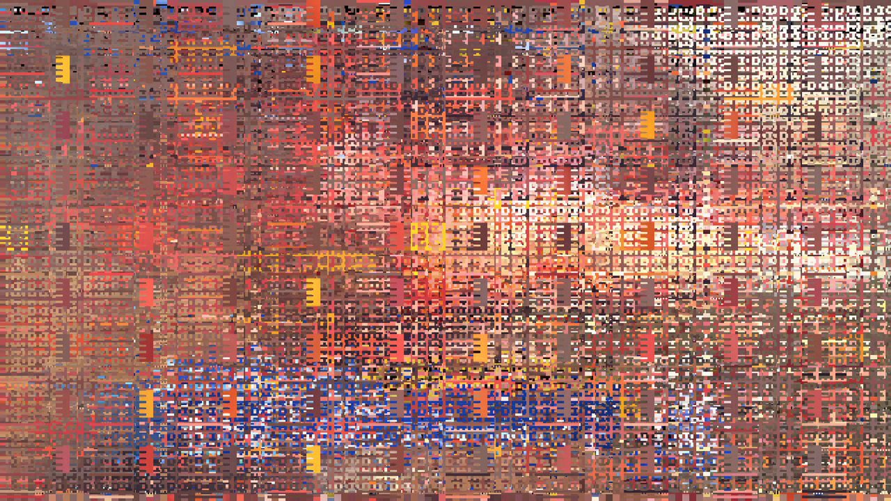

visual art with computers

interaction with computers
thoughts about "making interactive art"?
processing
an easy way to draw on the screen
similar in ethos to arduino
review
setup() vs. draw()
what do you need to give the illusion of animation?
how do you draw a circle?
how do you color a circle?
how do you deal with positions and directions?
how do you know your user has clicked?
today
drawing with the mouse
writing functions
arrays and for loops
drawing with the mouse
mouseX, mouseY are variables given to us, representing the mouse position
pmouseX, pmouseY represent the previous mouse position
the difference between past and present is movement
functions
functions do things
they need to be called
sometimes they need things to function (arguments)
they can return other things as a result
arrays
arrays are rows of data, aligned one next to the other
we need to give the type of data it will hold
and the size of it!
for loops
for loops allow us to go through arrays very quickly
more generally, they allow us to do things repeatedly very quickly
an array needs a starting number, a condition to continue, and a way to increment
homework
make a generative paintbrush!
read lev manovich / watch casey reas